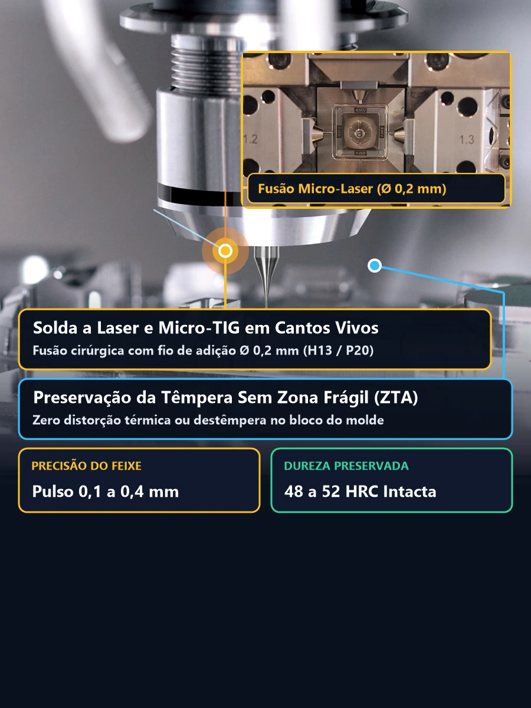
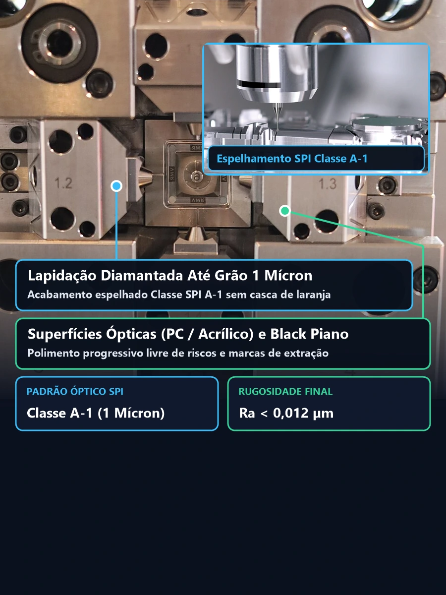
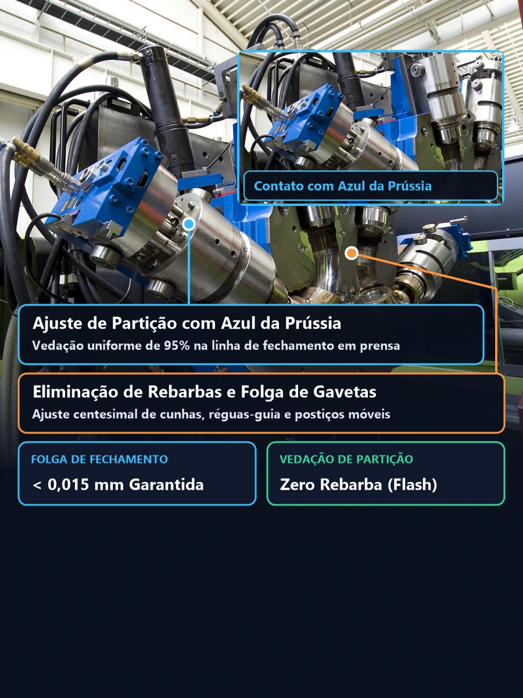
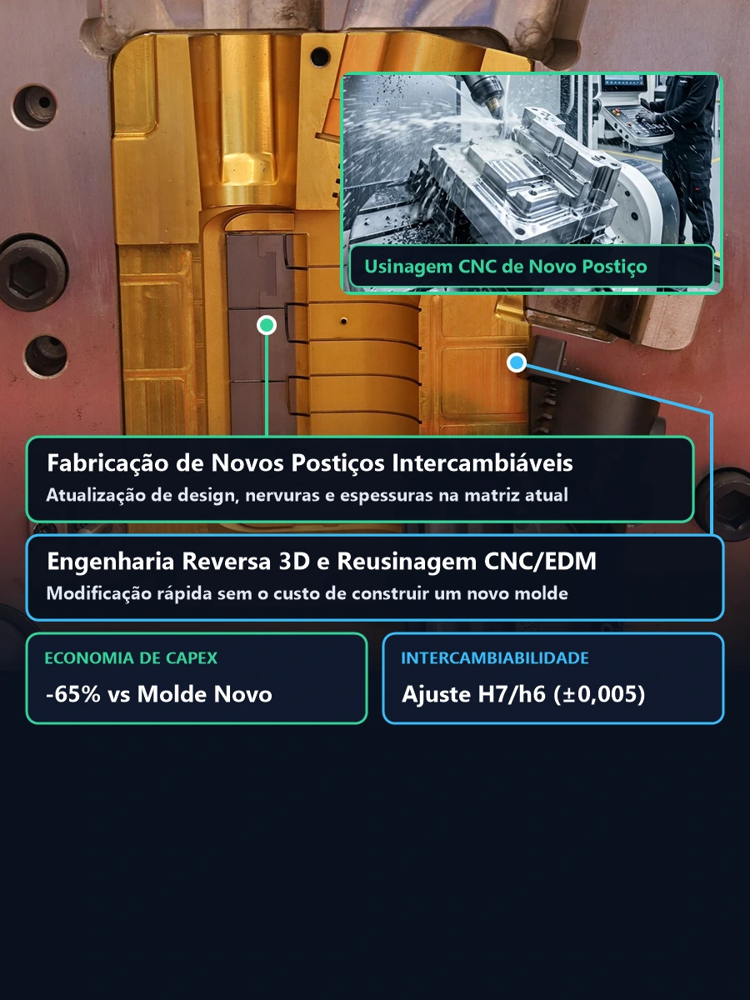

Takeaway Técnico (Diretriz para Diretores Industriais e Gerentes de Manutenção):
A manutenção preventiva programada a cada 25.000, 50.000 ou 100.000 ciclos custa menos de 10% do valor de um reparo corretivo emergencial com parada não planejada de linha. O desincrustamento químico dos canais de refrigeração restaura até 22% da troca térmica original, enquanto o ajuste de cunhas e a lubrificação com graxas sintéticas de alta temperatura (PTFE/PFPE que não migram para a cavidade) evitam o engripamento de colunas-guia, extratores e gavetas, mantendo o fechamento centesimal sem rebarbas.
Principais Serviços de Manutenção, Recuperação e Modificação de Matrizes
Interaja com o Baralho de Fases à esquerda ou selecione qualquer um dos 4 serviços críticos de bancada e usinagem à direita para inspecionar os parâmetros metalúrgicos, tolerâncias de ajuste e acabamentos superficiais aplicados em nossa ferramentaria:




Solda a Laser Micro-TIG
Reparo cirúrgico de cantos vivos amassados, trincas por fadiga ou desgaste de linha de fechamento com fio de adição de 0,2 mm. O feixe de laser pulsado não aquece o bloco estrutural do molde, preservando a têmpera original do aço (48 a 52 HRC) e evitando zonas termicamente afetadas (ZTA) frágeis.
Polimento Espelhado Óptico (Classe A1)
Lapidação manual e ultrassônica com pastas diamantadas progressivas até grão de 1 mícron (Grade #8000), atingindo rugosidade Ra < 0,012 μm sem efeito casca de laranja. Essencial para peças ópticas transparentes em Policarbonato (PC), Acrílico (PMMA) ou superfícies Black Piano.
Eliminação de Rebarbas e Ajuste de Partição
Reusinagem e ajuste de fechamento (spotting) com Azul da Prússia em bancada de prensa hidráulica. Correção de pré-carga em cunhas de travamento e eliminação de folgas mecânicas entre gavetas móveis e o corpo fixo do molde para tolerâncias inferiores a 0,015 mm.
Modificação Geométrica e Novos Postiços
Engenharia reversa 3D e fabricação de novos postiços intercambiáveis em CNC 5 eixos e eletroerosão EDM (ajuste H7/h6 ±0,005 mm) para incorporar atualizações de design (ECN), alterações de espessura ou novos detalhes funcionais sem construir uma nova matriz.
Níveis de Manutenção Preventiva, Corretiva e Modificação de Engenharia (Retrofit)
A gestão profissional de ativos de ferramentaria divide a Manutenção e Modificação de Moldes de Injeção em cinco regimes estruturados por contagem de batidas (ciclos) ou necessidade de engenharia de produto. Compare abaixo o escopo técnico, as tolerâncias de bancada e o prazo de retorno à injetora em cada modalidade:
| Regime / Nível | Gatilho / Ciclos | Escopo Técnico na Ferramentaria | Critério Metrológico | Lead Time |
|---|---|---|---|---|
| Preventiva Nível I Inspeção e Limpeza Tática |
A cada 25.000 a 50.000 ciclos (ou fim de lote) | Desengraxe químico das cavidades, desobstrução de saídas de gás (vents de 0,015 a 0,03 mm), inspeção de anéis O-ring e relubrificação de colunas e gavetas com graxa PTFE de alta temperatura. | Saídas de gás 100% livres e estanqueidade hidráulica a 8 bar | 12h a 24h |
| Preventiva Nível II Desmontagem Completa em Bancada |
A cada 100.000 a 150.000 ciclos | Desmontagem total de placas, conjunto extrator e gavetas; limpeza por ultrassom; desincrustamento ácido controlado dos canais de refrigeração; medição de folga de buchas/pinos e repolimento SPI. | Folga diametral de extratores ≤ 0,015 mm e vazão térmica restaurada | 2 a 4 dias úteis |
| Preventiva Nível III Overhaul / Reforma Geral |
A cada 300.000 a 500.000 ciclos | Substituição preventiva de molas ISO, pinos extratores, réguas de bronze grafitado e buchas; retífica de pré-carga em cunhas de gaveta; revisão completa do manifold e bicos da câmara quente. | Renovação da vida útil estrutural por mais 300.000+ ciclos | 5 a 10 dias úteis |
| Corretiva Emergencial Reparo de Quebra ou Rebarba |
Parada imediata por avaria, peça presa ou flash | Solda a laser Micro-TIG em arestas amassadas ou trincadas, extração de pino quebrado, ajuste de linha de fechamento com Azul da Prússia em prensa de spotting e troca de termopares/resistências. | Dureza 48–52 HRC preservada sem ZTA e fechamento < 0,015 mm | 24h a 72h (Urgência) |
| Modificação / Retrofit Alteração de Engenharia (ECN) |
Atualização de produto, versão ou ganho de ciclo | Engenharia reversa 3D, abertura de alojamentos para novos postiços intercambiáveis em CNC 5 eixos e eletroerosão EDM, adição de nervuras, logotipos, pinos ou conversão para câmara quente. | Ajuste H7/h6 (±0,005 mm) e aprovação dimensional de amostra (Try-out) | 5 a 15 dias úteis |
Os 3 Pilares Técnicos da Manutenção e Modificação de Moldes de Injeção
Para evitar que uma manutenção corretiva se torne um ciclo vicioso de retrabalhos na injetora, nossa matrizaria fundamenta cada intervenção em três pilares de engenharia metalúrgica, mecânica e térmica:
Solda a Laser Pulsada com Consumíveis Homólogos
A recuperação de bordas de cavidade exige compatibilidade química absoluta entre o metal-base e o arame de adição (Ø 0,15 a 0,40 mm). Utilizamos varetas específicas para aços P20, 2738, H13 temperado, S136 (Inox 420) e Cobre-Berílio (CuBe2) sob proteção de argônio puro.
Como o feixe laser funde apenas uma fração de milímetro por pulso sob microscópio estereoscópico, não há formação de Zona Termicamente Afetada (ZTA) nem queda de dureza ao redor do cordão, permitindo texturização química ou polimento óptico sem marcas de halo.
Spotting em Prensa, Cunha de Gavetas e Desincrustamento
Rebarbas recorrentes em polímeros de baixa viscosidade — como Poliamida (PA6 / PA66), Polipropileno (PP) e Poliacetal (POM) — ocorrem quando a linha de fechamento cede acima de 0,02 mm. Realizamos o spotting com Azul da Prússia para garantir ≥ 85% de área de contato efetivo na banda de vedação.
Simultaneamente, retificamos as placas de desgaste das cunhas de travamento (heel blocks) das gavetas móveis com pré-carga centesimal de 0,03 a 0,05 mm e executamos a limpeza química circulada dos canais de refrigeração para eliminar calcário e ferrugem.
Postiços Intercambiáveis e Atualização de Produto
Quando o departamento de engenharia do cliente aprova uma ECN (Engineering Change Notice) — como mudança de furação, reforço de nervuras estruturais, alteração de parede ou atualização de versão do produto —, não é necessário construir um molde novo.
Projetamos o postiço intercambiável em CAD 3D, abrimos o berço de alojamento no bloco existente por fresamento CNC Hard Milling ou eletroerosão de penetração (EDM) e montamos o novo inserto com ajuste deslizante ou interferência controlada H7/h6 (±0,005 mm).
Padrões de Polimento Técnico SPI (A-1 a C-3) na Recuperação de Cavidades
Além da função estética (transparência óptica ou brilho espelhado), o polimento técnico correto no sentido do fluxo de extração reduz o coeficiente de atrito superficial, eliminando marcas de arraste, esbranquiçamento por tensão nos pinos extratores e aderência de peça no macho:
Espelhado Óptico Diamantado
Pasta de diamante 1 a 3 mícrons (#8000 a #6000). Rugosidade Ra 0,012 a 0,025 μm. Aplicado em lentes automotivas, visores médicos em PC/PMMA e acabamentos Black Piano.
Alto Brilho Comercial e Lixas #600
Pasta diamantada 6 a 15 mícrons ou lixa #600. Rugosidade Ra 0,05 a 0,10 μm. Ideal para gabinetes eletrônicos, embalagens cosméticas e peças técnicas de alto padrão visual.
Acetinado Direcional de Desmoldagem
Lixas #400 a #320 aplicadas no sentido longitudinal de extração (Ra 0,10 a 0,28 μm). Evita efeito vácuo em paredes profundas e facilita o saque de peças técnicas em PA66 e POM.
Preparação por Pedra e Textura VDI 3400
Lapidação com pedras abrasivas #600 a #320 para remoção total da camada branca refundida da eletroerosão antes da texturização química ou erosão controlada VDI.

Verificação centesimal de paralelismo entre placas, pré-carga de cunhas e ajuste manual de postiços e extratores em bancada de ferramentaria.

Mapeamento direto da amostra injetada com rebarba, queima por gás preso (diesel effect) ou marca de pino para intervenção focalizada no aço.
Protocolo e Laudo Técnico de Liberação de Molde Pós-Manutenção
Nenhuma matriz sai da nossa ferramentaria sem passar pelos 4 testes obrigatórios de liberação em bancada, evitando que o preparador de injetora descubra vazamentos de água, curtos elétricos ou travamento de extratores apenas depois de guinchar o molde na máquina:
Teste Hidrostático e Fluxometria por Circuito
Pressurização de todas as linhas de refrigeração a 8 bar por 30 minutos após a troca dos anéis O-ring em Viton, acompanhada de medição comparativa de vazão (L/min) antes e depois da desincrustação química.
Teste Ôhmico, Isolação (Megômetro) e Termopares
Aferição individual de resistência ôhmica (Ω) e resistência de isolação elétrica (MΩ a 500V) de todas as zonas do distribuidor (manifold) e buchas quentes, além da calibração de termopares Tipo J/K e tomadas multipolares.
Registro de Contato em Azul da Prússia e Curso de Extração
Verificação do avanço suave e retorno total da placa extratora, teste de travamento de fim de curso (micro-switches), nivelamento centesimal de pinos extratores e validação de contato uniforme na linha de partição.
Proteção Anticorrosiva e Relatório de Intervenção
Purga completa de umidade com ar comprimido seco, aplicação de filme protetivo anticorrosivo ceroso nas cavidades, travamento com barra de segurança e emissão do Laudo Técnico de Manutenção com fotos de antes e depois.
Perguntas Frequentes sobre Manutenção e Modificação de Moldes de Injeção
1. Qual o prazo típico para reparo emergencial de um molde de injeção danificado?
Para intervenções corretivas pontuais — como solda a laser Micro-TIG em arestas amassadas, substituição de pinos extratores quebrados ou engripados, troca de resistências de câmara quente ou desobstrução de refrigeração —, o atendimento na ferramentaria é imediato, com liberação técnica da matriz entre 24 e 72 horas para reduzir drasticamente o tempo de injetora parada.
2. Qual a diferença entre solda a laser e solda TIG convencional na recuperação de moldes?
A solda a laser (e Micro-TIG pulsada) concentra a energia em pulsos micrométricos de 0,1 a 0,4 mm sem aquecer o bloco estrutural da cavidade. Isso preserva a têmpera e a dureza original do aço (48 a 52 HRC em H13 ou Inox 420) e elimina a Zona Termicamente Afetada (ZTA), impedindo trincas de borda, porosidades e afundamentos ao redor do reparo que ocorrem na solda TIG convencional.
3. Como eliminar rebarbas (flash) na linha de fechamento e nas gavetas do molde?
A eliminação definitiva de rebarbas exige a recomposição metalúrgica por solda a laser nas bordas desgastadas seguida de retífica plana, eletroerosão EDM e ajuste de bancada (spotting) com tinta Azul da Prússia em prensa hidráulica. As cunhas de travamento e as réguas de guia das gavetas são ajustadas com pré-carga centesimal para garantir vedação com folga residual inferior a 0,015 mm.
4. É possível modificar a geometria da peça plástica aproveitando o molde de injeção atual?
Sim. Por meio da modificação de engenharia (Retrofit / ECN), realizamos o escaneamento ou modelamento CAD 3D da cavidade existente, abrimos alojamentos retificados no bloco e fabricamos novos postiços intercambiáveis em CNC 5 eixos e eletroerosão EDM. Essa solução atualiza o design ou a espessura do produto economizando até 65% do investimento e 70% do prazo em comparação a um molde novo.
5. Vocês realizam manutenção em moldes importados ou fabricados por outras ferramentarias?
Sim. Nossa ferramentaria atende matrizes nacionais e importadas (asiáticas, europeias e norte-americanas) construídas nos padrões Hasco, DME, Polimold ou especiais, incluindo revisão completa de sistemas de câmara quente multimarcas (Yudo, Mold-Masters, Husky, Synventive e Incoe) e engenharia reversa completa mesmo quando o cliente não possui o desenho 3D original.